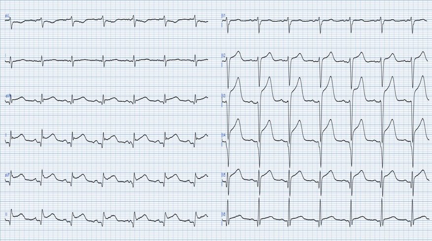
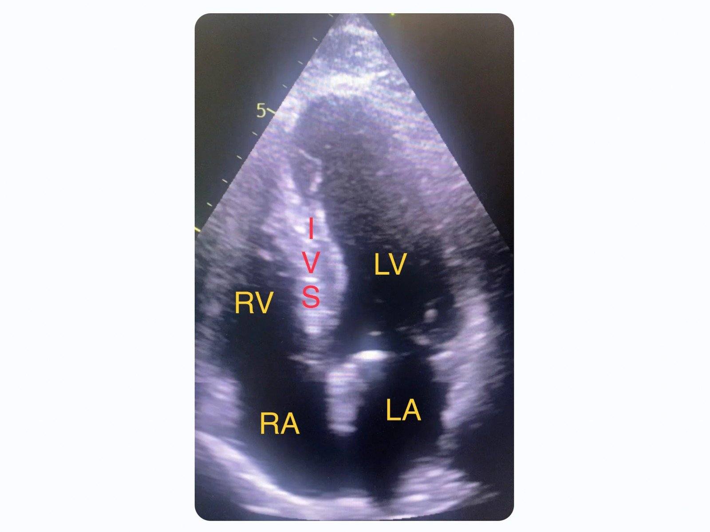
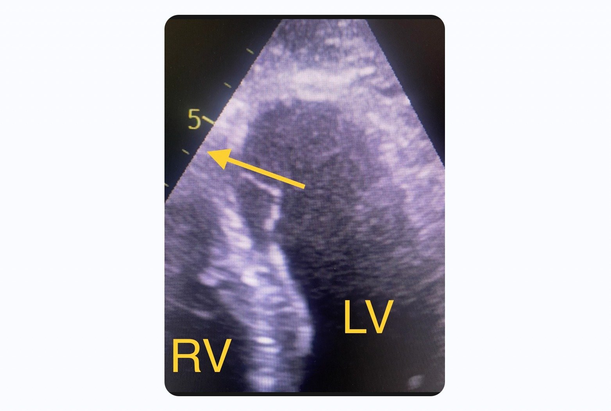
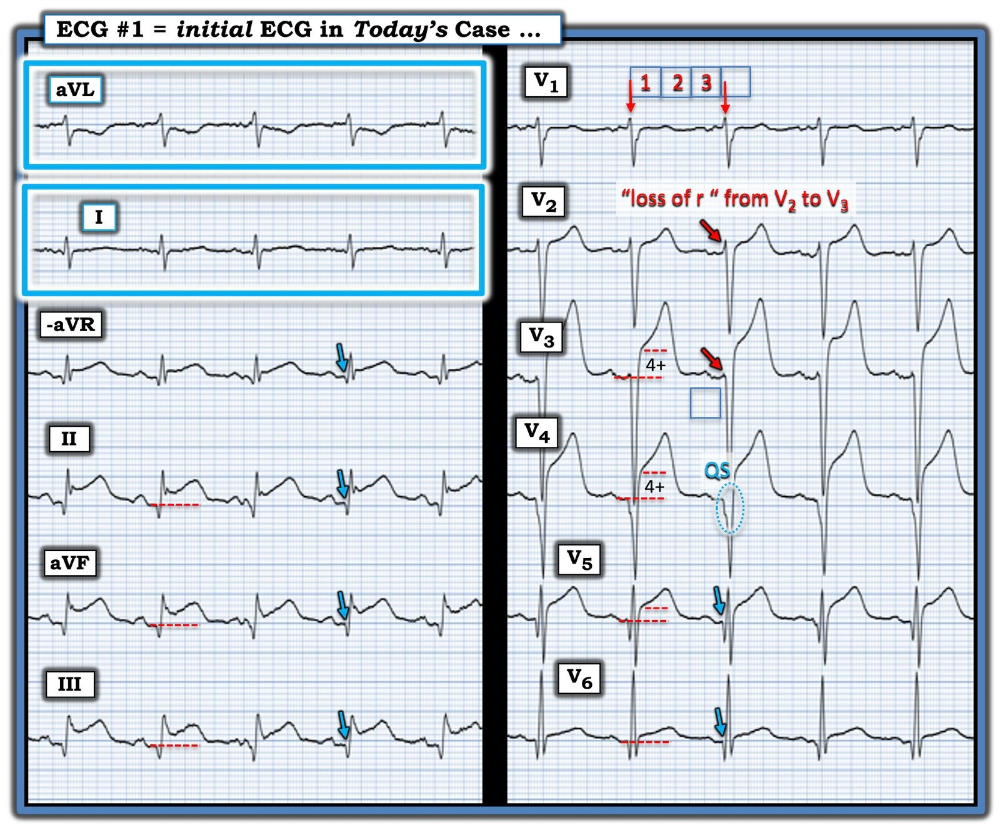

26/02/2025 — Đau ngực, sau đó khó thở tăng dần trong 6 ngày — chuyện gì đã xảy ra?
Bản dịch tiếng Việt của bài "Chest pain followed by 6 days of increasing dyspnea — what happened?" – Dr. Smith’s ECG Blog. Giữ nguyên toàn bộ 4 hình ảnh và 2 video của bản gốc.
Tác giả: Magnus Nossen, Smith biên tập
Bệnh nhân trong ca hôm nay là một nam giới 85 tuổi có tiền sử COPD và sa sút trí tuệ. Ông đến khoa cấp cứu để được đánh giá. Chúng ta hãy xem xét hai bệnh cảnh lâm sàng khác nhau. Bạn sẽ xử trí bệnh nhân này thế nào trong mỗi tình huống?
- Tình huống 1: Bệnh nhân đến viện với đau ngực sau xương ức kéo dài 24 giờ.
- Tình huống 2: Bệnh nhân đến viện với khó thở 6 ngày.
Dưới đây là điện tâm đồ lúc nhập viện của ông. Bạn nghĩ gì? Bạn giải thích thế nào về ST chênh lên ở các chuyển đạo trước tim và chuyển đạo chi?
= = =
Điện tâm đồ ban đầu trong ca hôm nay. (LƯU Ý: Điện tâm đồ này ban đầu được ghi với tốc độ giấy 50mm/giây. Nó đã được “nén” theo trục X để trông như được ghi với tốc độ giấy 25mm/giây.).


= = =
Diễn giải: Điện tâm đồ trên cho thấy nhịp xoang tần số 94 nhát/phút. Phức bộ QRS hẹp, trục QRS trên mặt phẳng trán gần thẳng đứng, khoảng 90 độ. Các chuyển đạo trước tim và các chuyển đạo dưới có ST chênh lên. Trước tiên, hãy xem các chuyển đạo trước tim:
- Các chuyển đạo trước tim đầu tiên V2 và V3 có sóng R rất nhỏ, theo sau là sóng S sâu và ST chênh lên.
- Chuyển đạo V4 không có sóng R mà thay vào đó là phức bộ QS, theo sau là ST chênh lên.
- Có một ít sóng R ở các chuyển đạo trước tim bên.
- Cả V3 và V4 đều có ST chênh lên 6mm. Khi có sóng QS, luôn phải nghĩ đến phình thất trái, nhưng tỷ lệ ST/QRS và tỷ lệ sóng T/QRS quá lớn, không phù hợp với phình thất trái.
- Nhận định: Điện tâm đồ này cho thấy rất nhiều “tính cấp” (acuity). Có diện tích đáng kể dưới đoạn ST và dưới sóng T. Điều này tương ứng với vùng cơ tim có khả năng cứu vớt được.
Smith: Sóng T rất tối cấp: đây là dấu hiệu của nhồi máu CẤP, ngay cả khi có sóng Q. Xem Raitt và cs.: 50% STEMI do LAD có sóng Q trong vòng một giờ. Dù phần lớn trong số này là sóng QR (không phải sóng QS), sóng QS vẫn có thể gặp trong nhồi máu cơ tim cấp; đó là lý do tôi cần xây dựng một quy tắc để phân biệt ST chênh lên và sóng QS của nhồi máu cơ tim thành trước cấp với ST chênh lên và sóng QS của phình thất trái. Vì vậy, nó không nhất thiết là bán cấp. Ngoại lệ là viêm màng ngoài tim sau nhồi máu, trong đó một nhồi máu xuyên thành đã hoàn tất gây viêm lớp cơ tim dưới thượng tâm mạc và ST chênh lên theo vùng phân bố của nhồi máu, dẫn đến ST chênh lên tăng thêm và sóng T dương lớn. Nếu chỉ xét riêng, các dấu hiệu điện tâm đồ phải được coi là nhồi máu cơ tim cấp cho đến khi chứng minh được điều ngược lại. Sự hiện diện của sóng Q KHÔNG hề loại trừ OMI cấp. Thậm chí đó có thể là một OMI cấp chồng lên một OMI cũ có sóng Q. Vì vậy, phải kích hoạt phòng thông tim để đánh giá. Nhiều khả năng sẽ thấy tắc LAD, và có thể khó biết chỗ tắc đã có từ bao lâu và cơ tim còn sống đến mức nào, nhưng cần phải mở thông nó.
= = =
Như vậy, chúng ta đã xem các chuyển đạo trước tim, chúng cho thấy các dấu hiệu phù hợp với OMI cấp hoặc bán cấp. Giờ hãy xem các thay đổi ST-T ở chuyển đạo chi.
- Bạn nghĩ gì về ST chênh lên ở các chuyển đạo dưới? ST chênh lên này có bản chất thiếu máu cục bộ không? ST chênh lên ở các chuyển đạo dưới có thể do một LAD “vòng qua mỏm” (wrap around) cấp máu cho thành dưới không? Và nếu vậy, bệnh nhân có thể hưởng lợi từ tái thông mạch không?
= = =
ST chênh lên ở các chuyển đạo dưới không có hình dạng thiếu máu cục bộ điển hình. Các đoạn ST lõm hướng lên (concave-up) với sóng J rõ ở chuyển đạo II và aVF. Cũng có đoạn PR chênh xuống nhẹ. Gộp lại, các dấu hiệu này thường gặp hơn trong viêm màng ngoài tim.
- Smith: Ở các chuyển đạo chi, véc-tơ ST hướng về chuyển đạo II (STE ở II ＞ STE ở III, điều này gợi ý viêm màng ngoài tim nhiều hơn là STEMI). Tuy nhiên, viêm màng ngoài tim sau nhồi máu thường giới hạn ở vùng nhồi máu (khác với viêm màng ngoài tim vô căn, vốn ảnh hưởng toàn bộ màng ngoài tim và có ST chênh lên lan tỏa với véc-tơ ST hướng về chuyển đạo II và V5). Đây là lý do viêm màng ngoài tim sau nhồi máu được gọi là “viêm màng ngoài tim khu trú sau nhồi máu” (postinfarction regional pericarditis)
= = =
Kết luận: Tóm lại, các thay đổi trên điện tâm đồ ban đầu của ca hôm nay có thể phù hợp với nhồi máu cơ tim thành trước cấp kèm sóng Q xuất hiện sớm. Trong một bối cảnh lâm sàng khác, chúng cũng có thể phù hợp với nhồi máu cơ tim bán cấp biến chứng viêm màng ngoài tim khu trú sau nhồi máu. Đối chiếu lâm sàng là chìa khóa để xử trí bệnh nhân theo cách tốt nhất có thể.
= = =
Quay lại ca bệnh …
Tình huống 2 là bệnh cảnh thực tế của người đàn ông 80 tuổi này. Do sa sút trí tuệ rất nặng, không thể khai thác bệnh sử chi tiết. Vợ ông cho biết 6 ngày trước ông có một đợt khó chịu ở ngực ngắn, sau đó than khó thở từng lúc. Ông đã được một nhân viên y tế khám vì khó thở 4 ngày trước khi nhập viện và được bắt đầu dùng kháng sinh đường uống do nghi viêm phổi. Ông không cải thiện.
Điện tâm đồ và bệnh sử lâm sàng phù hợp với nhồi máu xuyên thành bán cấp vùng LAD. Sóng T lớn và dương kéo dài ở thành trước cùng ST chênh lên ở thành dưới nhiều khả năng là kết quả của sự kết hợp giữa nhồi máu cơ tim bán cấp và viêm màng ngoài tim sau nhồi máu. Như bình luận của Dr. Smith ở trên — viêm màng ngoài tim sau nhồi máu nhìn chung không lan tỏa như viêm màng ngoài tim thông thường. Nó thường khu trú ở vùng nhồi máu; do đó, có thể có một LAD vòng qua mỏm cấp máu cho thành dưới.
- Như Dr Smith đã nhiều lần chỉ ra trên blog này, điện tâm đồ là một công cụ tuyệt vời để đánh giá khả năng sống của cơ tim. Từ chối cho bệnh nhân lợi ích tiềm năng của tái thông mạch chỉ vì triệu chứng đã kéo dài một khoảng thời gian nhất định cho thấy sự hiểu biết kém về sinh lý bệnh của thiếu máu cục bộ cơ tim.
- Bệnh nhân có thể có những đợt tái tưới máu thoáng qua lặp lại, giúp cơ tim không bị hoại tử. Ngoài ra, một số bệnh nhân có đủ dòng máu bàng hệ để giữ cho cơ tim còn sống.
- Điện tâm đồ, bệnh sử lâm sàng và siêu âm tim cùng nhau sẽ định hướng quyết định có đưa bệnh nhân vào phòng thông tim hay không.
= = =
Biến chứng của nhồi máu xuyên thành:
Trong số các biến chứng của nhồi máu xuyên thành có viêm màng ngoài tim sau nhồi máu (PIRP). Biến chứng này dễ xảy ra hơn nhiều ở những bệnh nhân được tái thông mạch muộn hoặc không được tái thông. Một nghiên cứu đánh giá các bệnh nhân nhồi máu cơ tim ST chênh lên trong giai đoạn 13 năm cho thấy chỉ 1.2% bệnh nhân bị PIRP [1]. Tỷ lệ xuất hiện PIRP đã giảm mạnh trong kỷ nguyên can thiệp mạch vành qua da. Dù tỷ lệ mắc thấp trong những năm gần đây, vẫn cần nghĩ đến PIRP ở bệnh nhân mới bị nhồi máu cơ tim.
= = =
Điều gì nên khiến bạn nghi ngờ PIRP?
Oliva và cs. [2] đã liên hệ chặt chẽ vỡ cơ tim với viêm màng ngoài tim khu trú sau nhồi máu (postinfarction regional pericarditis – PIRP), và liên hệ PIRP với sóng T dương kéo dài. Ông nhận thấy 2 kiểu hình điện tâm đồ của diễn tiến sóng T không điển hình trong PIRP:
- Sóng T dương (hướng lên) kéo dài sau 48 giờ kể từ khi khởi phát nhồi máu cơ tim cấp.
- Sóng T đảo ngược chuyển dần sang dương (hướng lên) sớm bất thường trong khoảng 48 đến 72 giờ sau khởi phát nhồi máu cơ tim, khi đã có sóng Q rõ.
Các quá trình duy nhất khác được xác định là gây ra kiểu diễn tiến sóng T sau nhồi máu này là hồi sinh tim phổi, tái nhồi máu và nhồi máu rất nhỏ. Cả tái tưới máu (đánh giá qua đường cong dấu ấn sinh học) — lẫn sự thông thoáng của động mạch (đánh giá qua chụp mạch) — đều tương quan với tốc độ và độ sâu của sóng T đảo ngược. Chín mươi phần trăm bệnh nhân có tái tưới máu đạt mức âm tối đa của sóng T từ 3 mm trở lên trong vòng 48 giờ sau khởi phát đau ngực, ở chuyển đạo ban đầu có ST chênh lên nhiều nhất. Bảy mươi sáu phần trăm bệnh nhân không có tái tưới máu đạt mức âm tối đa từ 2 mm trở xuống trong vòng 72 giờ. Do đó, sóng T dương sau 72 giờ kể từ nhồi máu cơ tim cấp nên khiến bạn nghĩ đến khả năng PIRP.
Khi một bệnh nhân ban đầu có sóng T đảo ngược do tái tưới máu hoặc do diễn tiến tự nhiên của nhồi máu cơ tim không được điều trị lại xuất hiện sóng T dương, chúng ta gọi đó là giả bình thường hóa sóng T (pseudonormalization). Trong tình huống này, có hai nguyên nhân chính cần xem xét:
- 1) Tắc lại động mạch liên quan đến nhồi máu. (Nguyên nhân thường gặp nhất)
- 2) Viêm màng ngoài tim khu trú sau nhồi máu. ( = nguyên nhân thường gặp thứ 2).
= = =
Diễn biến lâm sàng:
Bệnh nhân trong ca hôm nay không được tái thông mạch. Do triệu chứng không điển hình và mơ hồ, nhồi máu cơ tim ban đầu không được chẩn đoán. Lúc nhập viện, ông có tiền sử khó thở 6 ngày. Không có nguyên nhân gây khó thở nào khác rõ ràng, vì vậy có thể giả định rằng thiếu máu cục bộ cơ tim đã bắt đầu từ 6 ngày trước. Nếu đây là một nhồi máu cơ tim xuyên thành thành trước không biến chứng thì sóng T lẽ ra đã đảo ngược vào thời điểm nhập viện. Việc sóng T không đảo ngược khiến viêm màng ngoài tim khu trú sau nhồi máu nhiều khả năng là nguyên nhân của sóng T dương kéo dài.
Bệnh nhân nghi hội chứng vành cấp (ACS) nên được đánh giá bằng siêu âm tim. Ngày nay, các thiết bị bỏ túi giúp nhanh chóng có cái nhìn tổng quan về chức năng tim của bệnh nhân ngay tại giường. Có lẽ không phải mọi độc giả của blog này đều có kinh nghiệm đánh giá hình ảnh siêu âm tim.
= = =
Dưới đây tôi đưa lại một ảnh tĩnh từ siêu âm tim tại giường của bệnh nhân hôm nay. Phía trên ảnh là phần gần đầu dò siêu âm nhất. Mỏm tim nằm ở phía trên ảnh, đáy tim ở phía dưới. Các buồng tim đã được chú thích. (RA = nhĩ phải. RV = thất phải. LA = nhĩ trái. LV = thất trái. IVS = vách liên thất.)


= = =
Video này cho thấy rối loạn vận động thành khu trú ở vách đoạn xa và vùng mỏm thất trái. Vách đoạn xa trông dày lên. Điều này không phải do phì đại. Cơ tim trông dày lên (giả phì đại – pseudohypertrophied) do phù nề cơ tim. Phù nề cũng làm cho vùng cơ tim hoại tử giảm hồi âm, trông ít “trắng” hơn.
= = =
Vòng lặp siêu âm tim ở trên cho thấy một dòng chảy rối mạnh đi xuyên qua vách liên thất đoạn xa. Điều này phù hợp với thủng vách liên thất (ventricular septal rupture – VSR). Các biến chứng cơ học như VSR và vỡ thành tự do có liên quan với viêm màng ngoài tim khu trú sau nhồi máu. Đúng như dự đoán, bệnh nhân này đến viện với một tiếng thổi toàn tâm thu thô ráp mới xuất hiện.
= = =


Hình này cho thấy hướng dòng máu từ thất trái (hệ thống áp lực cao) qua lỗ thủng vách liên thất sang thất phải (hệ thống áp lực thấp). Nếu lỗ thủng lớn, áp lực hai bên lỗ thủng sẽ nhanh chóng cân bằng và chênh áp sẽ thấp. Ngược lại, nếu lỗ thủng nhỏ, áp lực sẽ không cân bằng và có thể đo được chênh áp bằng Doppler. Chênh áp trong ca này đáng kể, cho thấy lỗ thủng khá nhỏ. Lỗ thủng càng lớn thì luồng thông càng lớn. Thể tích luồng thông lớn hơn đồng nghĩa với lượng máu được tống ra khỏi thất trái qua van động mạch chủ ít hơn và cung lượng tim thấp hơn.
= = =
VSR (Thủng vách liên thất)
Khi có nhồi máu toàn bộ bề dày thành tim, sẽ có viêm thượng tâm mạc = PIRP (viêm màng ngoài tim khu trú sau nhồi máu) — và cơ tim có nguy cơ bị “vỡ.” Thuật ngữ “vỡ” nghe như một vụ nổ hay một chỗ toác lớn — nhưng thường đó chỉ là một chỗ rò nhỏ, chậm, theo thời gian có thể gây chèn ép tim và tử vong. Vỡ có thể là vỡ thành tự do (gây chèn ép tim) hoặc vỡ vách, gây thông liên thất với dòng chảy trái sang phải, dẫn đến phù phổi và sốc.
VSR sau nhồi máu cơ tim có tiên lượng rất nặng, với tỷ lệ tử vong một năm gần như 100% nếu không phẫu thuật sửa chữa. Bệnh nhân trong ca hôm nay có 2 biến chứng ( = PIRP và VSR) sau một nhồi máu cơ tim thành trước không được chẩn đoán. Bệnh nhân không được coi là ứng viên phẫu thuật. Các biến chứng cơ học như vỡ thành tự do, VSR và đứt cơ nhú dễ xảy ra hơn ở bệnh nhân lớn tuổi, nữ giới, tăng huyết áp, có bệnh thận mạn và không có tiền sử hút thuốc. Biến chứng này thường xảy ra trong bối cảnh nhồi máu cơ tim (MI) lần đầu, trên nền điều trị tái tưới máu muộn hoặc không được tái tưới máu. Chụp mạch thường cho thấy không có tuần hoàn bàng hệ đến vùng nhồi máu.
Vì thiếu máu cục bộ trước đó tạo ra tiền thích nghi cơ tim (preconditioning) (làm giảm khả năng hoại tử cơ tim xuyên thành và vỡ cơ tim) — những bệnh nhân có bằng chứng đái tháo đường, đau thắt ngực mạn tính hoặc nhồi máu cơ tim trước đó sẽ ít có khả năng bị vỡ hơn.
- VSR có thể xuất hiện trong vòng 1-14 ngày sau nhồi máu cơ tim, tuy nhiên tỷ lệ mắc thường có hai đỉnh (trong vòng 24 giờ đầu — hoặc sau 3-5 ngày kể từ nhồi máu cơ tim).
- Với những bệnh nhân được coi là ứng viên phẫu thuật — thời điểm phẫu thuật là yếu tố then chốt. Cơ tim hoại tử rất mỏng manh. Sau nhồi máu, hoạt tính metalloproteinase và sự phân hủy mô đạt đỉnh vào ngày thứ 7, trong khi sự lắng đọng collagen mới bắt đầu từ ngày thứ 2-4. Các tế bào cơ tim hoại tử được thay thế hoàn toàn bởi collagen sau 28 ngày, do đó trì hoãn phẫu thuật sửa chữa có thể giúp sửa chữa thành công nhờ cho mô bở có thời gian tổ chức hóa, vững chắc lên và phân biệt rõ với mô lành xung quanh.
Từ các điểm trên suy ra rằng điều quan trọng là ổn định bệnh nhân đủ để có thể lên kế hoạch phẫu thuật và chọn thời điểm phẫu thuật tối ưu.
- Để biết thêm về các ảnh hưởng huyết động và cách xử trí bệnh nhân bị VSR, xem bài đăng ngày 5 tháng Chín năm 2024.
- Để xem một ví dụ khác về PIRP và VSR, xem bài đăng ngày 18 tháng Bảy năm 2014.
= = =
Những điểm cần học:
- Sóng QS kèm ST chênh lên kéo dài và/hoặc sóng T tối cấp có thể do nhồi máu cơ tim cấp — hoặc — do nhồi máu cơ tim bán cấp đã hoàn tất kèm viêm màng ngoài tim sau nhồi máu.
- Viêm màng ngoài tim sau nhồi máu hàm ý nhồi máu xuyên thành hoàn toàn và khiến bệnh nhân có nguy cơ thủng vách liên thất, thậm chí vỡ thành tự do cơ tim.
- May mắn là các biến chứng cơ học của nhồi máu xuyên thành hiếm gặp. Dù vậy, chúng là biến chứng đáng sợ với tỷ lệ bệnh tật và tử vong cao.
- Một tiếng thổi tâm thu thô ráp mới xuất hiện ở bệnh nhân nhồi máu cơ tim bán cấp đã hoàn tất — là VSR hoặc đứt cơ nhú (kèm hở van hai lá cấp) cho đến khi chứng minh được điều ngược lại.
- PIRP (viêm màng ngoài tim khu trú sau nhồi máu) có thể được nghi ngờ từ điện tâm đồ — và có liên quan với tăng nguy cơ vỡ cơ tim.
- Luôn phải đối chiếu lâm sàng trước khi ra quyết định.
= = =
Tài liệu tham khảo:
[1] Lador, A. và cs. (2017). Incidence and Prognosis of Pericarditis After ST-Elevation Myocardial Infarction (from the Acute Coronary Syndrome Israeli Survey 2000 to 2013 Registry Database). Tạp chí The American Journal of Cardiology, 121(6), 690–694. https://doi.org/10.1016/j.amjcard.2017.12.006.
[2] Oliva, P. B., Hammill, S. C., & Edwards, W. D. (1993). Electrocardiographic diagnosis of postinfarction regional pericarditis. Ancillary observations regarding the effect of reperfusion on the rapidity and amplitude of T wave inversion after acute myocardial infarction. Tạp chí Circulation, 88(3), 896–904. https://doi.org/10.1161/01.cir.88.3.896.
[3] Oliva PB, Hammill SC, Edwards WD. Cardiac rupture, a clinically predictable complication of acute myocardial infarction: report of 70 cases with clinicopathologic correlations. Tạp chí J Am Coll Cardiol 1993; 22:720-726.
[4] Wang, S., Liu, H., Yang, P., Wang, Z., & Chen, S. (2024). Current Understanding of Timing of Surgical Repair for Ventricular Septal Rupture following Acute Myocardial Infarction. Tạp chí Cardiology, 1–14. https://doi.org/10.1159/000538967.
[5] Vega, J. D. S., Salinas, G. L. A., và cs. (2022). Optimal surgical timing after post-infarction ventricular septal rupture. Tạp chí Cardiology Journal, 29(5), 773–781. https://doi.org/10.5603/cj.a2022.0035.
[6] Contemporary Management of Post-MI Ventricular Septal Rupture – American College of Cardiology. (2018, ngày 30 tháng Bảy) (Quản lý hiện đại thủng vách liên thất sau nhồi máu cơ tim). American College of Cardiology. https://www.acc.org/latest-in-cardiology/articles/2018/07/30/06/58/contemporary-management-of-post-mi-ventricular-septal-rupture.
= = =
======================================
BÌNH LUẬN CỦA TÔI, bởi KEN GRAUER, MD (26/2/2025 — Cập nhật cho WordPress ngày 31/1/2026):
Tôi thấy ca hôm nay rất giàu tính gợi mở ở nhiều khía cạnh. Những khía cạnh đó gồm:
- Thực tế là dù các biến chứng nghiêm trọng của MI cấp ngày nay ít gặp hơn nhiều so với những năm trước — ca hôm nay lại biểu hiện một “sự kết hợp” các biến chứng sau nhồi máu (tức là viêm màng ngoài tim sau MI — và — VSR sau MI = thủng vách liên thất (Ventricular Septal Rupture)). Nắm được diễn tiến của các biến chứng này là điều quan trọng để giúp phát hiện sớm hơn.
- MI của bệnh nhân này phần lớn là “thầm lặng“ — ở chỗ đau ngực CP (Chest Pain) không phải là than phiền nổi bật. Thay vào đó, triệu chứng chính của bệnh nhân là khó thở nặng (Xem bài ngày 5 tháng Chín năm 2024 trên Dr. Smith’s ECG Blog về tần suất của MI “thầm lặng”, nhất là ở bệnh nhân lớn tuổi đến viện vì khó thở cấp — ca ngày 5 tháng Chín đó cũng của Dr. Nossen, và cũng kèm VSR sau MI).
- Khám thực thể đã cho nhiều thông tin. Phần lớn các trường hợp MI cấp — khám thực thể cung cấp thêm rất ít thông tin (ngoại trừ những bệnh nhân MI cấp đến viện trong tình trạng suy tim hoặc sốc). Bệnh nhân hôm nay có âm thổi toàn tâm thu, thô ráp, phù hợp với VSR cấp. Âm thổi này được phát hiện lúc nhập viện qua khoa cấp cứu ED (Emergency Department) — nhưng chúng ta không được biết liệu đã nghe thấy âm thổi hay chưa vào 4 ngày trước đó, khi bệnh nhân được khám ở một cơ sở chăm sóc ngoại trú và được điều trị kháng sinh vì viêm phổi. Điều này có ý nghĩa — vì biết âm thổi xuất hiện khi nào có thể đã giúp nhận ra VSR nhanh hơn ở bệnh nhân cao tuổi bị sa sút trí tuệ và khó thở nặng này.
- Chúng ta không được biết liệu có ai đã nghe tìm tiếng cọ màng ngoài tim hay không. Đây có thể đã là một manh mối khác giúp nhận ra sớm hơn tình trạng viêm màng ngoài tim sau biến cố của bệnh nhân này.
- Siêu âm tim tại giường đã có giá trị chẩn đoán — cho thấy rõ rối loạn vận động thành khu trú ở phần xa vách liên thất và mỏm thất. Một lần nữa, dùng siêu âm tim sớm hơn hẳn đã giúp nhận ra nhanh hơn nguyên nhân gây khó thở của bệnh nhân này, vốn đã bắt đầu từ 6 ngày trước.
- Cuối cùng — dường như không có điện tâm đồ nào được ghi vào 4 ngày trước, lúc khám ở tuyến chăm sóc ban đầu. Qua hỏi bệnh sử sau đó, tôi được biết lần tiếp xúc đầu tiên này là một lần khám tại nhà của nhân viên y tế chăm sóc ban đầu — và việc đánh giá rõ ràng là khó khăn vì bệnh nhân bị sa sút trí tuệ. Nhưng qua “kính nhìn hồi cứu” (retrospectoscope) — tôi thấy việc nhìn lại và cân nhắc liệu lúc đó có nên chuyển bệnh nhân đến ED để đánh giá hay không là điều rất bổ ích. Đây hoàn toàn không phải là một lời chỉ trích — vì rõ ràng chúng ta thiếu thông tin chi tiết để đưa ra bất kỳ phán xét nào. Nhưng chúng ta học được từ những ca không diễn ra như dự kiến (tức là có vẻ bệnh nhân chưa bao giờ bị viêm phổi) — và làm “việc khó” là cân nhắc xem chúng ta có thể làm khác đi điều gì vào lần tới khi gặp tình huống tương tự, chính là cách chúng ta tiến bộ với tư cách người thầy thuốc lâm sàng.
- T.B. (P.S.): Ca hôm nay không hề nhắc đến một điện tâm đồ trước đó . Hiểu rằng chúng ta không được biết nhiều chi tiết của ca hôm nay — việc tìm một bản ghi trước đó để so sánh có thể đã làm sáng tỏ một số dấu hiệu mâu thuẫn trên điện tâm đồ hôm nay (mà tôi đã sao lại và đánh dấu trong Hình 1).
= = =
CÂU HỎI:
- Bạn sẽ diễn giải thế nào điện tâm đồ trong Hình 1?
= = =
Hình 1: Tôi đã đánh dấu điện tâm đồ ban đầu của ca hôm nay.


LƯU Ý: Điện tâm đồ ở Hình 1 trên đây ban đầu được ghi theo định dạng Cabrera — trong đó cả tốc độ ghi lẫn thứ tự các chuyển đạo chi đều đã thay đổi (tức là Thay vì +aVR — dùng cách hiển thị âm của chuyển đạo aVR = -aVR).
- Vì “bộ não điện tâm đồ” của tôi đã quen đọc điện tâm đồ ở tốc độ 25 mm/giây (là chuẩn ở Mỹ và ở phần lớn thế giới) — thói quen của tôi là chủ động thu hẹp bề rộng của những bản ghi như vậy đi 50% để bù cho tốc độ 50 mm/giây vẫn thường dùng với định dạng Cabrera. Điều này đã được thực hiện ở Hình 1.
- Được viền XANH ngay phía trên chuyển đạo V1 — là vài ô lưới điện tâm đồ giúp nhận ra rằng khoảng R-R trên điện tâm đồ #1 dài hơn 3 ô lớn một chút — tương ứng với nhịp xoang tần số ~90-95/phút.
- Trong bối cảnh thế giới toàn cầu hóa — chúng tôi khuyến khích làm quen với các định dạng ghi khác nhau (Để xem ôn tập chi tiết về định dạng Cabrera — Hãy xem Bình luận của tôi ở cuối trang trong bài ngày 26 tháng Mười năm 2020 trên Dr. Smith’s ECG Blog).
= = =
Điện tâm đồ ở Hình 1:
Như đã nêu — có nhịp xoang ~90-95/phút. Khoảng PR bình thường. QRS không rộng.
- QTc có vẻ ở giới hạn trên của bình thường, hoặc kéo dài ở mức ranh giới (Dùng Công cụ tính QTc của chúng tôi được mô tả trong bài ngày 12 tháng Một năm 2025 — và nhập tần số ~95/phút cùng QT đo được = 370 msec, như thấy ở chuyển đạo V3,V4 — chúng tôi có QTc ước tính rõ ràng dưới 450 msec., tức là vẫn bình thường).
- Dù sóng S ở các chuyển đạo trước tim giữa khá sâu — vẫn chưa đạt hẳn tiêu chuẩn điện thế của LVH (Xem Bình luận của tôi trong bài ngày 20 tháng Sáu năm 2020). Thay vào đó, sóng S sâu ở các chuyển đạo ngực nhiều khả năng là hệ quả của việc thiếu các lực đối kháng do nhồi máu vùng trước lan rộng.
Có sóng Q:
- Thấy sóng Q ở nhiều chuyển đạo. Dù hẹp — sóng Q khá sâu ở các chuyển đạo -aVR,II,aVF,III; và ở chuyển đạo V5,V6 (các mũi tên XANH ở những chuyển đạo này).
- Có mất sóng r từ chuyển đạo V2 đến V3 (các mũi tên ĐỎ ở những chuyển đạo này).
- Tiếp theo là một sóng QS sâu ở chuyển đạo V4. Có phân mảnh gần đầu sườn xuống của sóng S (trong hình bầu dục chấm chấm màu XANH ở chuyển đạo V4 này).
- Trong khi khó biết nên hiểu thế nào về các sóng Q tương đối hẹp, lan tỏa ở chuyển đạo chi — thì các dấu hiệu ở chuyển đạo ngực gồm “mất sóng r” + QS phân mảnh ở V4 + sóng Q ở V5,V6 sâu hơn nhiều so với dự kiến cho thấy MI vùng trước lan rộng vào một thời điểm nào đó.
- Viêm màng ngoài tim đơn thuần không biểu hiện sóng Q nhồi máu. Nhưng sóng Q thường gặp trong viêm màng ngoài tim sau nhồi máu.
Có ST chênh lên rõ rệt và lan tỏa:
- Đáng chú ý vì sự giống nhau của chúng — 4 chuyển đạo chi liên tiếp ( = các chuyển đạo -aVR,II,aVF,III ) đều cho thấy sóng Q, theo sau là ST chênh lên đáng kể tại điểm J. Đoạn ST thẳng đuỗn ở mỗi chuyển đạo này, theo “con mắt của tôi”, gợi ý tính cấp tính.
- Trước 4 chuyển đạo chi liên tiếp có ST chênh lên này — “con mắt” của tôi bị thu hút bởi ST chênh xuống đối xứng như ảnh soi gương ở chuyển đạo aVL và đoạn ST dẹt rõ ở chuyển đạo I (trong 2 hình chữ nhật XANH) kế bên.
- ST chênh lên rõ rệt ở chuyển đạo V3,V4 (hơn 4 mm.). Các chuyển đạo kế bên V5,V6 có ST chênh lên ở mức độ nhẹ hơn.
- Viêm màng ngoài tim đơn thuần không biểu hiện kiểu thay đổi ST-T soi gương như thấy ở các chuyển đạo bên cao I,aVL. Nhưng dấu hiệu ST chênh lên ở 8/12 chuyển đạo, đi kèm với các sóng Q nêu trên, có lẽ phù hợp nhất với MI dưới-trước-bên lan rộng gần đây, nay kèm viêm màng ngoài tim sau nhồi máu.
= = =
SUY NGHĨ CUỐI CÙNG:
Tôi ước gì chúng ta biết thêm về một số chi tiết của ca hôm nay. MI bắt đầu khi nào? VSR xảy ra khi nào? Bệnh tim của bệnh nhân này lan rộng đến mức nào trước biến cố gần đây?
- Dù vậy — xét tuổi của bệnh nhân, các bệnh đồng mắc, và quyết định rằng ông không phải là ứng viên phẫu thuật, thì về mặt lâm sàng có rất ít điều có thể làm để thay đổi tiên lượng dè dặt của bệnh nhân này.
= = =
= = =